Deep dive into 3 years of synthetic stock market data — trends, patterns, anomalies, correlations, and statistical hypothesis testing across 12 stocks and 6 sectors.
All 6 panels updating live — 391 frames, 39 seconds at 10fps.
python finance_eda_video.py
locally to generate and watch the full 39-second live animation.
Click any chart to enlarge. Each chart answers one of the 8 questions posed before analysis.
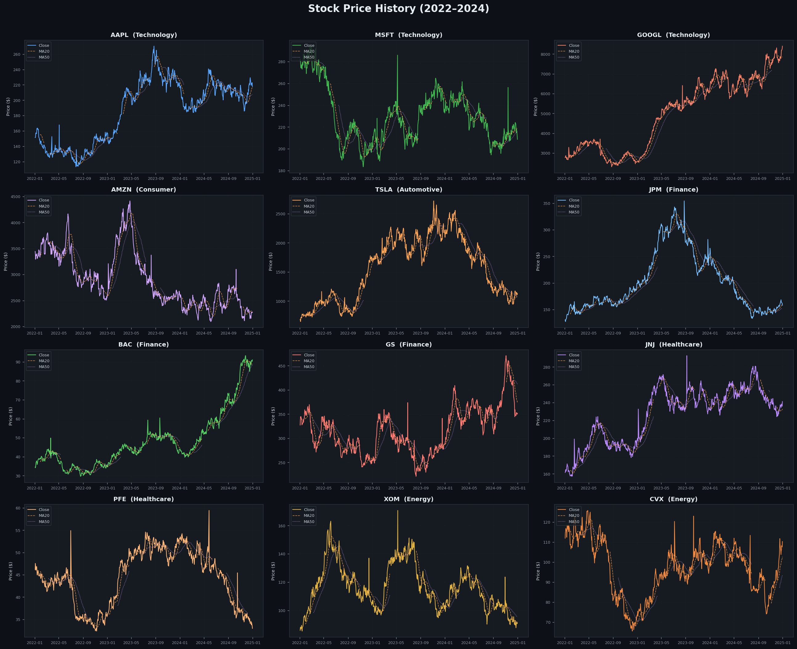
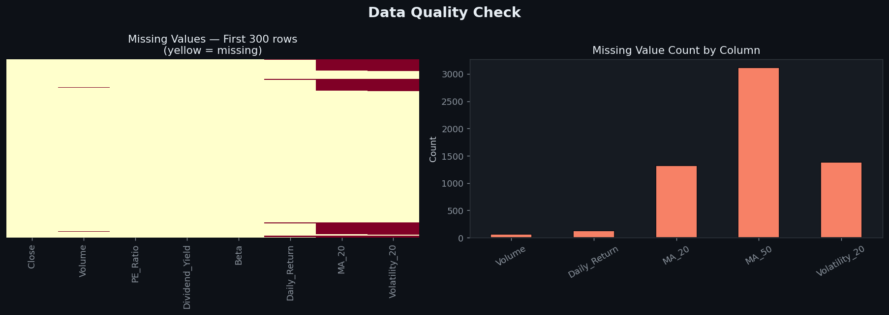
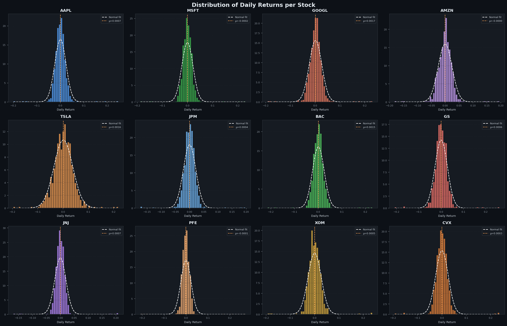
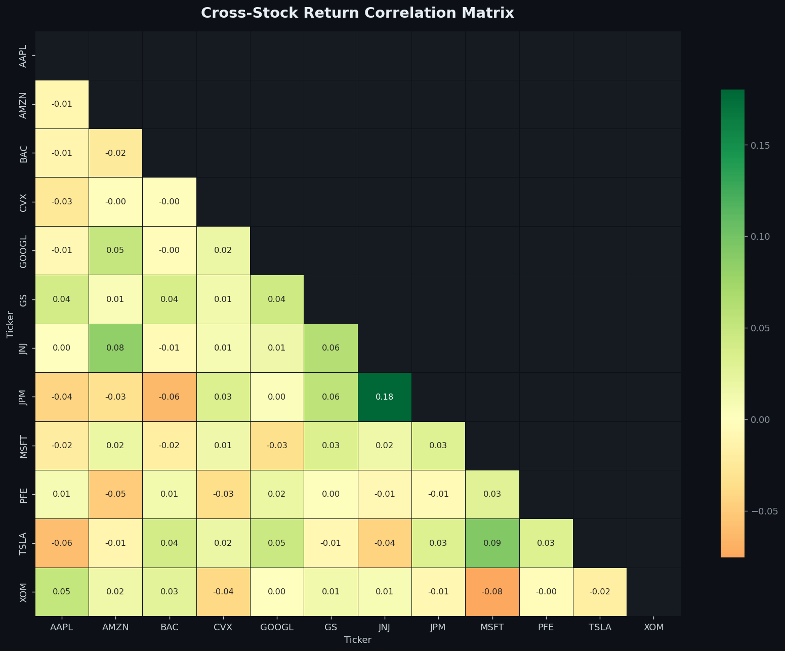
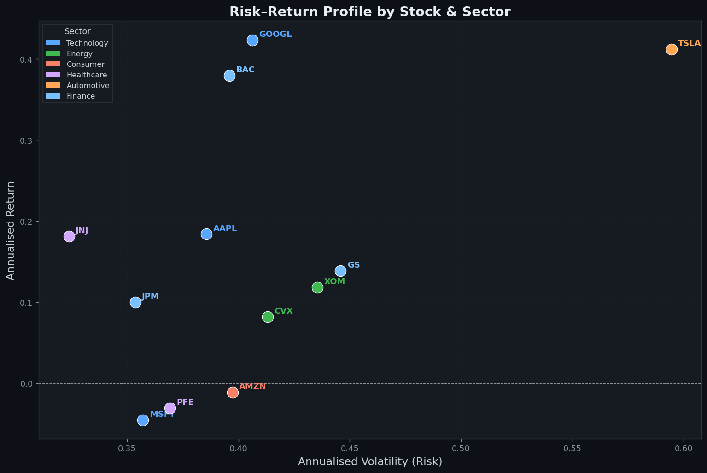
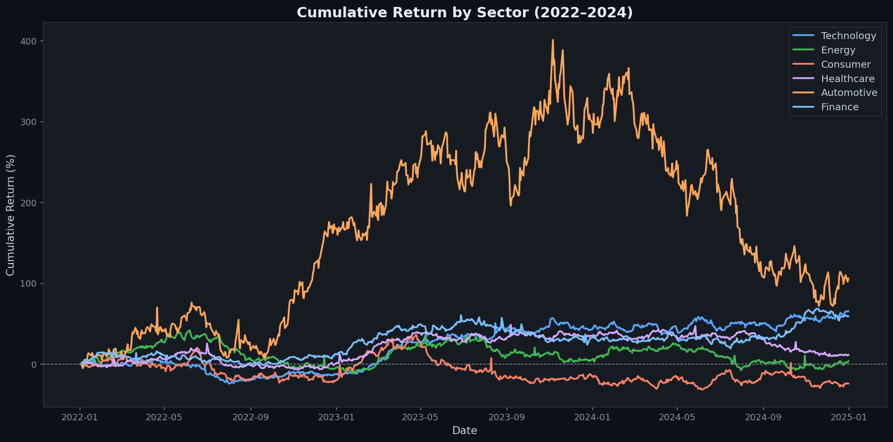
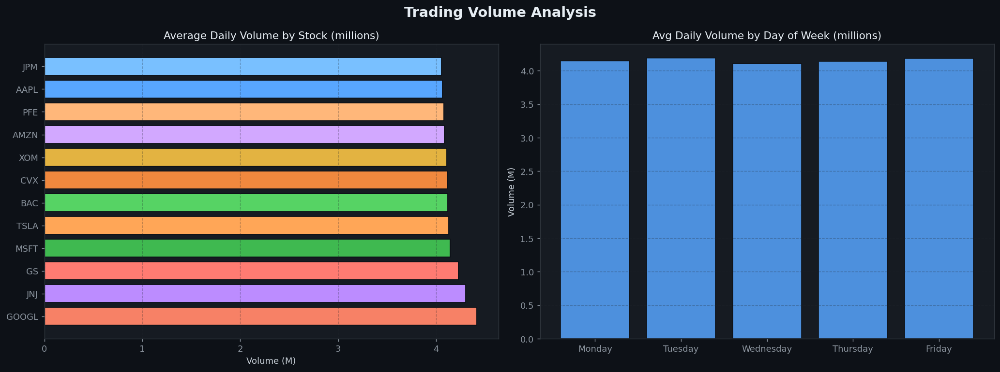
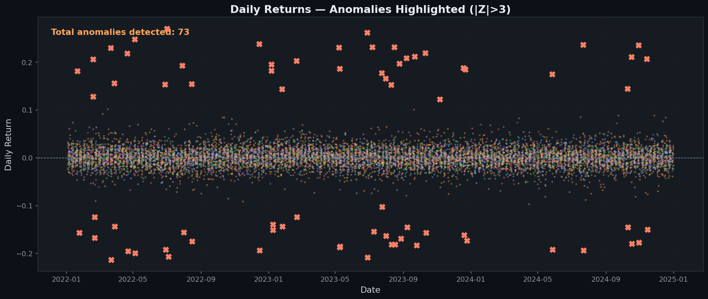
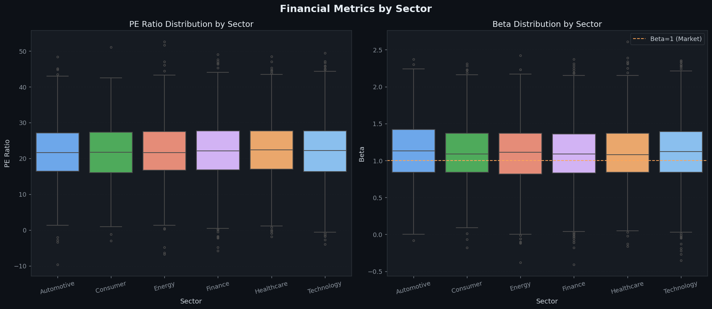
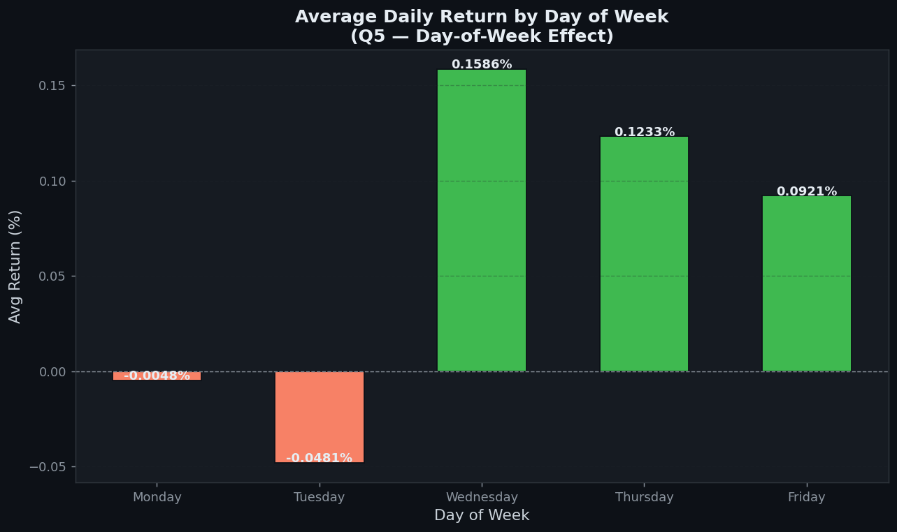
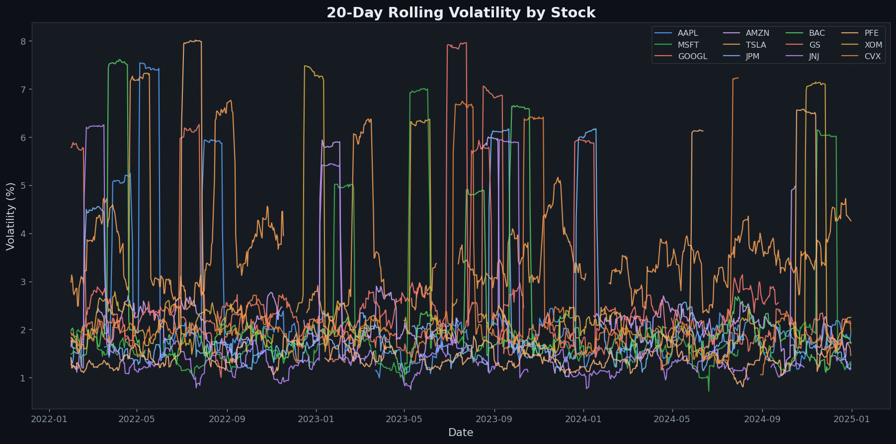
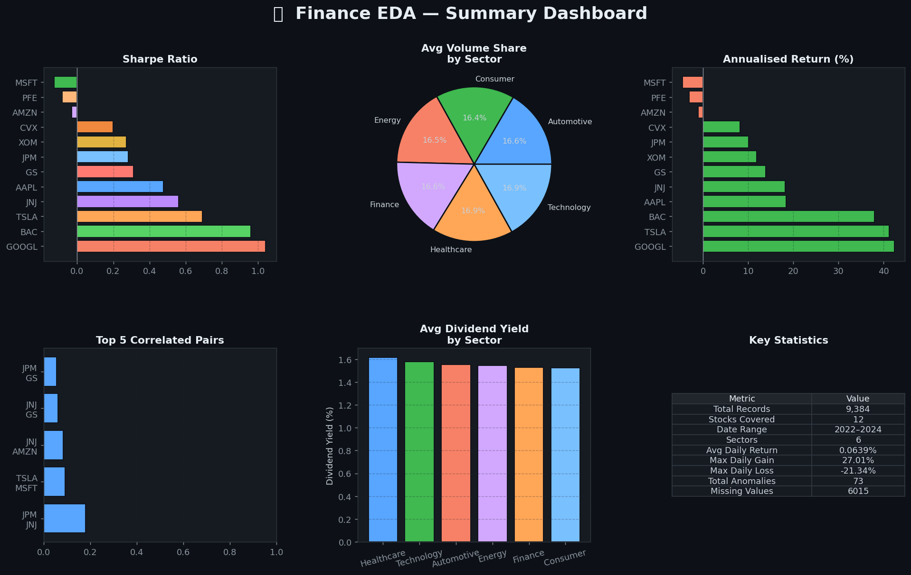
4 statistical tests to validate assumptions and answer key questions about the data.